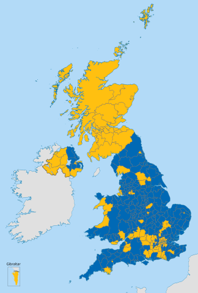
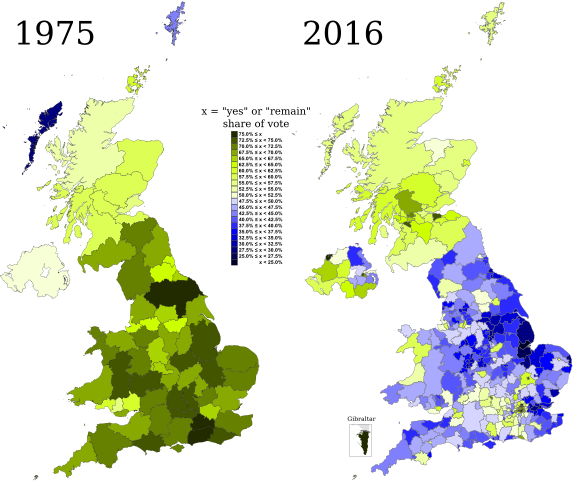

Consecuencias del Brexit
Entre las consecuencias económicas que produjo el resultado del referéndum se encuentra la caída del rendimiento de los bonos británicos hasta el mínimo desde 1703. La divisa británica se hundió al nivel de 1985 en la mañana posterior al referéndum.
Algunos medios informaron de una oleada de hostilidad xenófoba poniéndola en relación con la consulta y su resultado, alertando de un aumento de entre un 54 % y un 57 % en los incidentes de racismo, estando los ataques dirigidos principalmente contra musulmanes e inmigrantes polacos, aunque también se registraron actos contra la comunidad española. Un informe del Gobierno británico publicado en octubre del mismo año confirmó que los crímenes de odio subieron un 41 % tras el referéndum.
Otro problema que se avivó fue la integridad territorial británica, dado el triunfo en Escocia e Irlanda del Norte de la permanencia en la Unión Europea. En Escocia un par de años antes se celebró un referéndum de autodeterminación en el que se aprobó la permanencia en el Reino Unido por miedo a que una eventual independencia supusiese la salida de la Unión, mientras que en Irlanda del Norte ha vuelto a abrirse el debate acerca de la unión con el territorio republicano con el fin de permanecer en la Unión Europea, unión que después del referéndum ganó bastantes adeptos, aunque no hay planes de plantear en una consulta popular la reunificación de toda la isla.
A nivel europeo, la necesidad de abordar los problemas internos derivados del referéndum restaron tiempo al tratamiento de temas relacionados con la seguridad y la política exterior europea con la Guerra Civil Siria y la consecuente crisis migratoria. Sin embargo Jean-Claude Juncker, presidente de la Comisión Europea ha presentado el Libro Blanco sobre el futuro de Europa en el que expone cinco escenarios posibles para la evolución de la organización, buscando dar impulso a una refundación de la Unión Europea tras el Brexit.
Por otra parte, Theresa May realizó una convocatoria de elecciones generales anticipadas en el Reino Unido para el 8 de junio de 2017, con la intención de contar con «Un liderazgo seguro, fuerte y estable para afrontar el Brexit e ir más allá». No obstante, a pesar de las buenas perspectivas iniciales para May, en las elecciones acabó perdiendo la mayoría absoluta conservadora de la que disfrutaba y acabó dependiendo del Partido Unionista Democrático (DUP), que complicó el Brexit porque no aceptaba los planes de May para la frontera entre Irlanda e Irlanda del Norte.
Las negociaciones con la UE comenzaron oficialmente en junio de 2017. En noviembre de 2018, se publicó el Proyecto de Acuerdo de Retirada, negociado entre el Gobierno del Reino Unido y la UE. El 12 de diciembre de 2018 May superó una moción de confianza interna dentro de la bancada conservadora, obteniendo 200 votos a favor y 117 en contra, en una votación con voto secreto. El 15 de enero de 2019 la Cámara de los Comunes votó en contra del acuerdo por un margen de 432 a 202 (la mayor derrota parlamentaria en la historia para un gobierno del Reino Unido en funciones), y nuevamente el 12 de marzo con un margen de 391 a 242 en contra del acuerdo.
El 14 de marzo de 2019, la Cámara de los Comunes votó para que May le solicite a la UE una extensión del período permitido para la negociación. Miembros de toda la Cámara de los Comunes rechazaron el acuerdo. Los líderes sindicales exigieron que cualquier acuerdo debe mantener una unión aduanera y un mercado único. May acabó dimitiendo en julio de 2019 y fue sustituida por Boris Johnson, quien obtuvo un gran resultado electoral en diciembre de ese año.
Finalmente el Brexit se ejecutó el 31 de enero de 2020. Existió un periodo transitorio hasta el 31 de diciembre de 2020 por el cual Reino Unido se mantuvo en el mercado europeo y los ciudadanos y las empresas no notaron diferencias. Reino Unido y la UE negociaron una nueva relación comercial durante los siguientes meses hasta finalizar 2020.
A partir del 1 de mayo de 2021 se aplica el Acuerdo de cooperación y comercio entre la Unión Europea y el Reino Unido.
Referendum de 2016
El 23 de junio de 2016 se realizó el referéndum sobre la permanencia del Reino Unido en la Unión Europea, también conocido como brexit, el resultado fue que el 51,9 % de los votantes eran partidario de abandonar la UE, frente a un 48,1 % partidario de permanecer. Sin embargo, en Escocia, Irlanda del Norte y Gibraltar, además de Londres, predominó la opción de la permanencia. Tras los resultados del referéndum, el primer ministro David Cameron anunció su dimisión del cargo en octubre del mismo año, argumentando que un liderazgo fresco debería llevar al país a la opción elegida en la votación. Una iniciativa popular de recogida de firmas en la web de peticiones del parlamento de Westminster para que el parlamento se planteara la realización de un segundo referéndum recabó más de cuatro millones de apoyos en los días siguientes a la consulta. El 29 de marzo de 2017, el nuevo gobierno británico encabezado por Theresa May notificó formalmente a la UE la intención del país de retirarse, iniciándose el proceso de negociaciones del Brexit. La retirada, originalmente programada para el 29 de marzo de 2019, se retrasó por el estancamiento del parlamento británico después de las elecciones generales de junio de 2017, ya que dieron como resultado un parlamento sin mayoría en el que los conservadores perdieron la mayoría pero seguían siendo el partido más votado. Este punto muerto condujo a tres alargamientos del proceso del Artículo 50 por parte del Reino Unido.
El estancamiento se resolvió después de que se celebraran elecciones generales posteriores en diciembre de 2019. En esas elecciones, los conservadores que hicieron campaña a favor de un acuerdo de retirada «revisado» liderado por Boris Johnson obtuvieron una mayoría absoluta de 80 escaños. Después de las elecciones de diciembre de 2019, el parlamento británico finalmente ratificó el acuerdo de retirada con la Ley de la Unión Europea (Acuerdo de retirada) de 2020. El Reino Unido abandonó la UE a fines del 31 de enero de 2020 CET (11 p. m. GMT). Esto inició un período de transición que finalizó el 31 de diciembre de 2020 CET (11 p. m. GMT), durante el cual el Reino Unido y la UE negociaron su futura relación. Durante la transición, el Reino Unido permaneció sujeto a la legislación de la UE y siguió siendo parte de la Unión Aduanera de la Unión Europea y del Mercado Único Europeo. Sin embargo, ya no formaba parte de los órganos o instituciones políticas de la
| Votos de Sí | Sí (%) | Votos de No | No (%) | Participación (%) |
| 16 141 241 | 48,1 | 17 410 742 | 51,9 | 72,2 |
|  |
| Resultados por regiones del Referéndum sobre la permanencia del Reino Unido en la Unión Europea de 2016. En azul zonas donde ganó el Brexit (salida de la UE) y en amarillo donde ganó el bremain (permanencia en la UE). |
Periodo entre referéndums
El Partido Laborista, entonces en la oposición, hizo campaña en las elecciones generales de 1983 para que el Reino Unido saliera de la Comunidad Económica Europea. La propuesta no tuvo mayor calado por la aplastante victoria de Margaret Thatcher, que fue reelegida en las elecciones. A partir de ese momento, el Partido Laborista cambió su política hacia Europa.
Como resultado del Tratado de Maastricht, la CEE se convirtió en la Unión Europea. En 1994 se formó el antiguo Referendum Party de la mano de James Goldsmith para concurrir a las elecciones generales de 1997 con el objetivo de celebrar un referéndum sobre la permanencia en la UE. Presentó candidatos en 547 circunscripciones en aquellas elecciones y consiguió 810 860 votos. No logró ningún escaño en el parlamento por la dispersión de su voto, de manera que perdieron sus depósitos (aportados por Goldsmith) en 505 circunscripciones.
A comienzos de la década de 1990 también se formó el Partido de la Independencia del Reino Unido (UKIP). Es un partido euroescéptico en contra de la participación del Reino Unido en la Unión Europea. Consiguió el tercer lugar en el Reino Unido en las elecciones europeas de 2004, el segundo en las de 2009 y el primero en las de 2014. Los comicios de 2014 fueron los primeros desde 1906 en los que el partido más votado no era el Partido Conservador ni el Partido Laborista.
El debate lo volvió a retomar en 2013 el primer ministro, David Cameron, al proponer un referéndum sobre el mantenimiento del Reino Unido en la Unión Europea, proyectado en 2014, pero marcado para 2017. A partir de la victoria en las elecciones generales de 2015 del Partido Conservador y por las presiones del nuevo partido UKIP, que tiene un importante respaldo de la población por la crisis económica y las presiones que genera el aumento de la llegada de más migrantes de Europa, el proyecto de buscar la salida de Inglaterra de la Unión Europea se consolidó, dado que era uno de los puntos clave de la campaña.
Durante 2016 el primer ministro Cameron llevó a cabo una serie de negociaciones con la UE sobre concesiones que la Unión Europea podría realizar al Reino Unido a cambio de un gobierno británico favorable a la UE.
História de los Referendums de salida de UK de la UE
El Reino Unido se adhirió a la Comunidad Económica Europea, comúnmente denominada por los británicos como el «Mercado Común», el 1 de enero de 1973, bajo el gobierno conservador de Edward Heath. El Partido Laborista, liderado en la oposición por Harold Wilson, concurrió a las elecciones generales de octubre de 1974 con el objetivo de renegociar los términos de pertenencia del Reino Unido a la CEE y, posteriormente, celebrar un referéndum sobre la permanencia en la misma en función de los nuevos términos.
En 1975 se celebró un referéndum en el que el electorado decidió sobre la permanencia británica en la CEE. Todos los principales partidos políticos y la prensa apoyaron la continuidad en el mercado común. Sin embargo, hubo fracturas internas significativas entre los laboristas (en aquel momento el partido gobernante), dado que sus militantes habían votado a favor de la salida en una conferencia celebrada el 26 de abril de 1975, cuya duración había sido de un día. Puesto que el gobierno estaba dividido entre acérrimos proeuropeos y antieuropeos, Harold Wilson autorizó que sus ministros hicieran campaña pública en favor de cualquiera de las dos opciones. En total, siete de los treinta y dos miembros del gobierno se opusieron a la pertenencia a la CEE.
El 5 de junio de 1975, los electores tuvieron que decidir si votaban sí o no a la pregunta: «¿Piensa que el Reino Unido debe permanecer en la Comunidad Europea (Mercado Común)?». Todos los condados administrativos del Reino Unido registraron una mayoría de votos afirmativos, con la excepción de las islas Shetland y las islas Hébridas Exteriores. Como resultado, el Reino Unido permaneció en la CEE.
| Votos de Sí | Sí (%) | Votos de No | No (%) | Participación (%) |
| 17 378 581 | 67,2 | 8 470 073 | 32,8 | 64,5 |
|  |
| Comparación de resultados entre el referéndum de 1975 y el referéndum de 2016. El verde representa la permanencia y el azul la salida. |